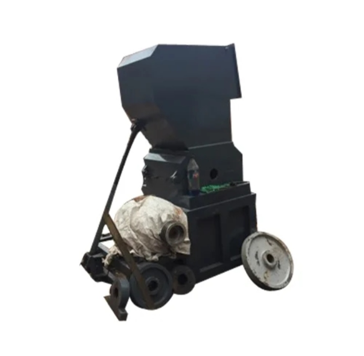

PP Box Strapping Plant Manufacturer Ahmedabad, PP Strap Plant Gujarat, PP Box Strapping Machine India, Plastic Machinery Manufacturer, Industrial Machinery Ahmedabad, PP Strap Production Line, PP Strap Extrusion Plant, Packaging Machinery Manufacturer, Plastic Processing Machinery Gujarat, Ganesh Engineering Works Ahmedabad
Heavy Duty Plastic Scrap Grinder Machine, Plastic Recycling Grinder Ahmedabad, Industrial Plastic Crusher GujaratRelying on our expertise in this domain, we are engaged in offering a premium quality range of Heavy Duty Plastic Scrap Grinder Machines. Widely used in plastic recycling industries for efficient scrap processing.